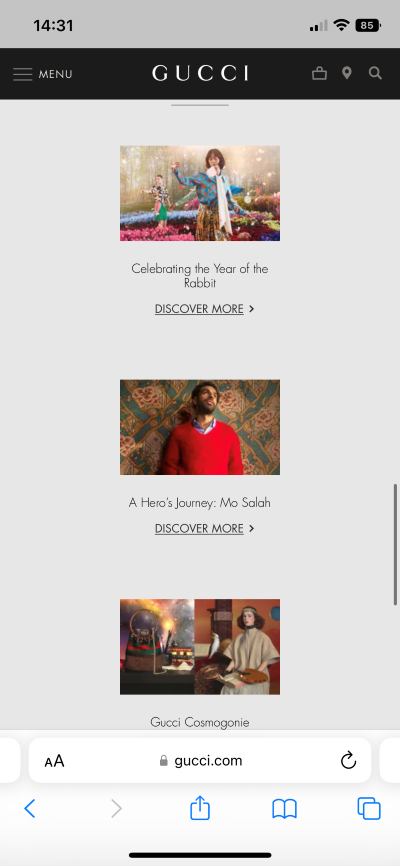
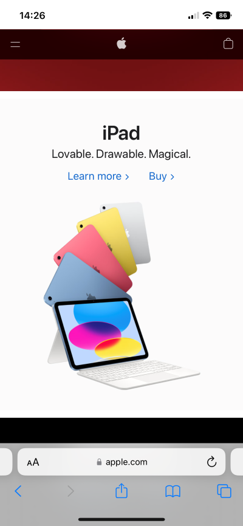

PARC: Alignment
Gucci
gucci.com
This is an example to aligment-centered since this page have 3 images with a description and hyperlink and each of this are in the center and have a order
PARC: Repetition
Apple
apple.com
There is a good example to repetition, because we can see the repetition of the Ipad in different colors. It brings a great design element working in unison with each other
PARC: Contrast
Adobe
adobe.comIn this example, we can see a composition with contrast in the variations of shape and colors